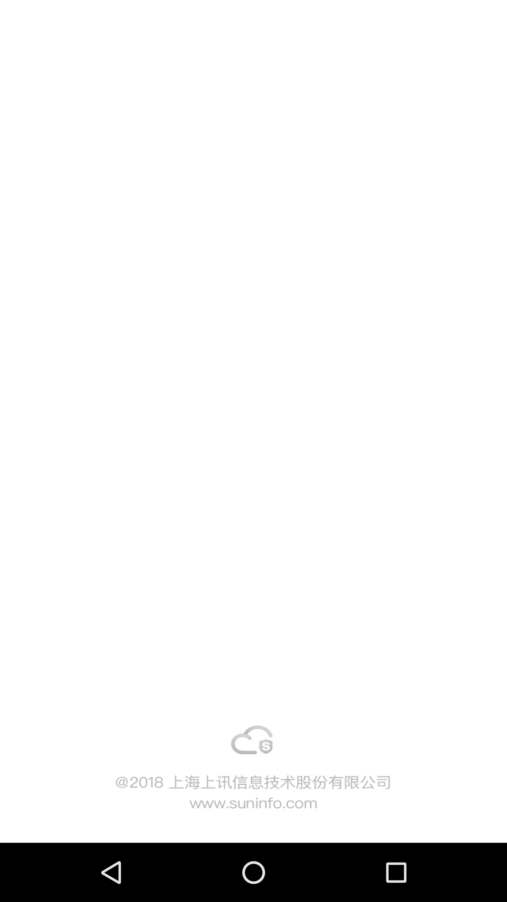
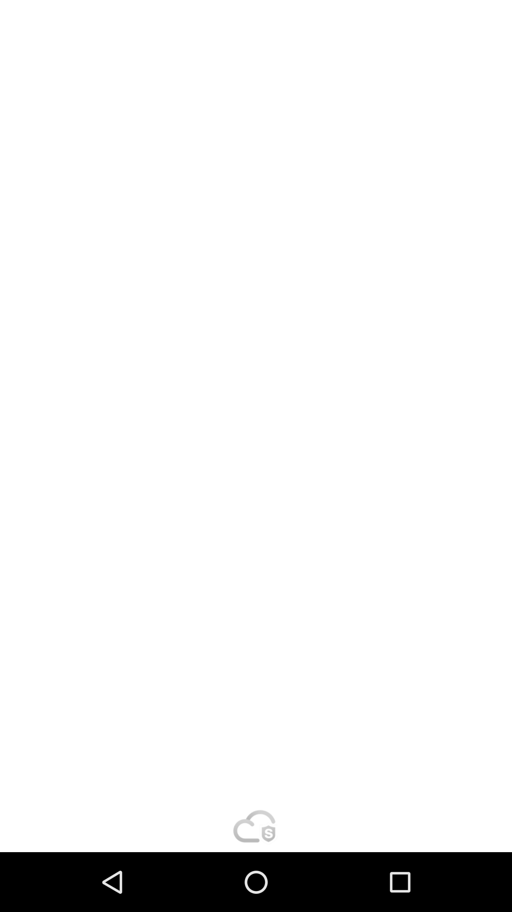
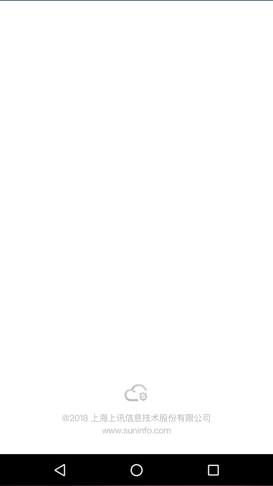

在我们公司rn的项目中，使用的是 react-native-splash-screen 这个启动屏组件。
但是在实际使用过程中，会发现android下的启动屏幕是没有固定比例的，组件官方给出的解决方案是使用线性布局。
代码如下：
1 2 3 4 5 6 <?xml version="1.0" encoding="utf-8" ?> <LinearLayout xmlns:android ="http://schemas.android.com/apk/res/android" android:orientation ="vertical" android:layout_width ="match_parent" android:layout_height ="match_parent" android:background ="@drawable/launch_screen" > </LinearLayout >
由于是线性布局，这样写会出现一个图片宽度或者高度被拉伸的情况，我们程序员肉眼凡胎看不出来，但是像素眼的美工一眼就看出来了，如下图：

没办法，本着尊重设计的原则，我们下来就换成了 ImageView 并使用 android:scaleType="centerCrop" 属性来保证图片宽度或者高度不被拉伸。
代码如下：
1 2 3 4 5 6 7 8 <?xml version="1.0" encoding="utf-8" ?> <ImageView xmlns:android ="http://schemas.android.com/apk/res/android" android:layout_width ="match_parent" android:layout_height ="match_parent" android:orientation ="vertical" android:scaleType ="centerCrop" android:src ="@drawable/launch_screen" > </ImageView >
这样写固然好，在美工16:9的机器上面表现完美，但是在我的测试机上却出现了只能适配16:9的问题，如下图：
无奈只好另寻方法。
突然灵光一闪，能不能自己用 matrix 实现一个 TopCrop 或者 bottomCrop 呢。于是google了一下，还真的有解决方案。
先写了一下TopCrop的
图片会铺满左右宽度，并且顶到容器顶部，图片底部多于容器高度的部分会被剪裁掉。
代码如下：
1 2 3 4 5 6 7 8 9 10 11 12 13 14 15 16 17 18 19 20 21 22 23 24 25 26 27 28 29 30 31 32 33 34 35 36 37 38 39 40 41 42 package com.sicap;import android.content.Context;import android.graphics.Matrix;import android.util.AttributeSet;import android.widget.ImageView;public class TopCropImageView extends ImageView { public TopCropImageView (Context context, AttributeSet attrs) { super (context, attrs); setScaleType(ScaleType.MATRIX); } public TopCropImageView (Context context, AttributeSet attrs, int defStyle) { super (context, attrs, defStyle); setScaleType(ScaleType.MATRIX); } public TopCropImageView (Context context) { super (context); setScaleType(ScaleType.MATRIX); } @Override protected boolean setFrame (int l, int t, int r, int b) { if (getDrawable() == null ) { return super .setFrame(l, t, r, b); } Matrix matrix = getImageMatrix(); float scaleWidth = getWidth() / (float ) getDrawable().getIntrinsicWidth(); float scaleHeight = getHeight() / (float ) getDrawable().getIntrinsicHeight(); float scaleFactor = (scaleWidth > scaleHeight) ? scaleWidth : scaleHeight; matrix.setScale(scaleFactor, scaleFactor, 0 , 0 ); if (scaleFactor == scaleHeight) { float tanslateX = ((getDrawable().getIntrinsicWidth() * scaleFactor) - getWidth()) / 2 ; matrix.postTranslate(-tanslateX, 0 ); } setImageMatrix(matrix); return super .setFrame(l, t, r, b); } }
1 2 3 4 5 6 7 8 <?xml version="1.0" encoding="utf-8" ?> <com.sicap.TopCropImageView xmlns:android ="http://schemas.android.com/apk/res/android" android:layout_width ="match_parent" android:layout_height ="match_parent" android:orientation ="vertical" android:src ="@drawable/launch_screen" > </com.sicap.TopCropImageView >
下面是效果:

下面是BottomCrop，因为我们项目启动屏只有最底部一行字，所以适配起来轻松一些。
图片会铺满左右宽度，并且顶到容器底部，图片顶部多于容器高度的部分会被剪裁掉。
代码如下：
1 2 3 4 5 6 7 8 9 10 11 12 13 14 15 16 17 18 19 20 21 22 23 24 25 26 27 28 29 30 31 32 33 34 35 36 37 38 39 40 41 42 43 44 45 46 47 48 49 50 51 52 53 54 55 56 57 58 59 60 61 package com.sicap;import android.content.Context;import android.graphics.Matrix;import android.graphics.RectF;import android.util.AttributeSet;import android.widget.ImageView;public class BottomCropImageView extends ImageView { public BottomCropImageView (Context context) { super (context); setup(); } public BottomCropImageView (Context context, AttributeSet attrs) { super (context, attrs); setup(); } public BottomCropImageView (Context context, AttributeSet attrs, int defStyle) { super (context, attrs, defStyle); setup(); } private void setup () { setScaleType(ScaleType.MATRIX); } @Override protected boolean setFrame (int l, int t, int r, int b) { if (getDrawable() == null ) return super .setFrame(l, t, r, b); Matrix matrix = getImageMatrix(); float scale; int viewWidth = getMeasuredWidth() - getPaddingLeft() - getPaddingRight(); int viewHeight = getMeasuredHeight() - getPaddingTop() - getPaddingBottom(); int drawableWidth = getDrawable().getIntrinsicWidth(); int drawableHeight = getDrawable().getIntrinsicHeight(); if (drawableWidth * viewHeight > drawableHeight * viewWidth) { scale = (float ) viewHeight / (float ) drawableHeight; } else { scale = (float ) viewWidth / (float ) drawableWidth; } RectF drawableRect = new RectF (0 , drawableHeight - (viewHeight / scale), drawableWidth, drawableHeight); RectF viewRect = new RectF (0 , 0 , viewWidth, viewHeight); matrix.setRectToRect(drawableRect, viewRect, Matrix.ScaleToFit.FILL); setImageMatrix(matrix); return super .setFrame(l, t, r, b); } }
1 2 3 4 5 6 7 8 <?xml version="1.0" encoding="utf-8" ?> <com.sicap.BottomCropImageView xmlns:android ="http://schemas.android.com/apk/res/android" android:layout_width ="match_parent" android:layout_height ="match_parent" android:orientation ="vertical" android:src ="@drawable/launch_screen" > </com.sicap.BottomCropImageView >
下面是效果:

以上，就是启动图宽高被拉伸的解决方案，下周去了可以让美工做个20：9的启动图我们直接放上去。